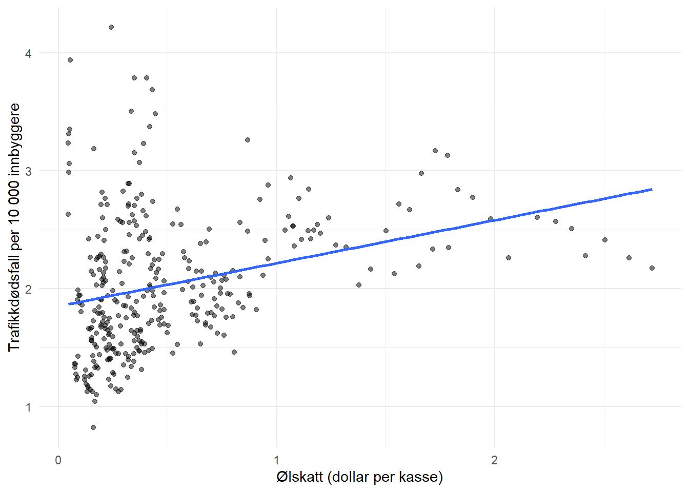

8.6 Seminar 6 - Avansert regresjon og maskinlæring
8.6.1 Logistisk regresjon, maskinlæring, paneldata
Nevn minst to grunner til at en ønsker å utføre en vanlig regresjonsanalyse. Reflekter så over hva hovedgrunnen er med å lage henholdsvis en KNN-modell og en regresjonsmodell.
Diskuter i hvilken grad det er rimelig med komponenten \(v_t\) i en paneldatamodell
\[y_{it} = \beta_0 + \beta_1 x_{it} + ... + v_t + \alpha_i + \epsilon_{it} \]
dersom en skal analysere paneldata av følgende responsvariabler \(y_{it}\):
- Antall konkurser hver måned i ulike land.
- Timentlig energi-etterspørsel i norske kommuner.
- Lønn per år for forskjellige individer i et land.
- Kan du komme på en tidsinvariant forklaringsvariabel som er relevant for responsvariablene over? Gjør det noe om vi “glemmer” disse?
Tegn et sett med observasjoner bestående av en dummy-variabel \(Y\) og en kontinuerlig variabel \(X\) i et xy-koordinatsystemet hvor en ville fått bedre prediksjoner av \(Y\) med KNN-metoden enn med logistisk-regresjon.
Prøv deg på eksamen H21 oppgave 3. Oppgaveformuleringene finner du i seksjon 9.1.
8.6.2 Paneldata og kausal identifikasjon
Oppgave 1
Card og Krueger (1994) undersøkte effekten av en økning i minstelønn på sysselsetting i hurtigmat-restauranter. I april 1992 økte New Jersey (NJ) sin minstelønn fra $4.25 til $5.05, mens nabostaten Pennsylvania (PA) beholdt sin minstelønn på $4.25.
Forskerne samlet inn data fra restauranter i begge stater i februar 1992 (før endringen) og november 1992 (etter endringen).
- Last inn Card-Krueger-datasettet. Lag først variabelen for årsverk (FTE), der
empfter antall fulltidsansatte,nmgrser antall ledere, ogemppter antall deltidsansatte (som teller halvparten):
Lag deretter en figur som viser gjennomsnittlig fte over tid (observation), separat for New Jersey og Pennsylvania (state). Beskriv hva du ser.
- Hva ville vi konkludert dersom vi bare sammenlignet sysselsettingsnivået i New Jersey og Pennsylvania i november 1992? Hvorfor er denne sammenligningen problematisk?
Oppgave 2
I Card-Krueger-studien sammenligner forskerne endringen i sysselsetting i New Jersey med endringen i Pennsylvania. Vi skal nå bygge oss opp til dette steg for steg.
Hvorfor er det ikke nok å bare se på endringen i New Jersey fra februar til november?
Forklar med egne ord hvorfor vi bruker Pennsylvania som sammenligningsgruppe. Hva antar vi om hvordan sysselsettingen i New Jersey ville utviklet seg dersom minstelønnen ikke hadde økt?
Lag dummy-variabler for behandling:
njmin <- njmin %>%
mutate(
treat = if_else(state == "New Jersey", 1, 0),
post = if_else(observation == "November 1992", 1, 0)
)Estimer deretter tre modeller som bygger opp til difference-in-differences-estimatet:
- Naiv sammenligning: Bruk kun data fra november 1992 (
post == 1), og estimer \(\text{fte}_i = \beta_0 + \beta_1 \text{treat}_i + \varepsilon_i\) - Før-etter: Bruk kun data fra New Jersey (
treat == 1), og estimer \(\text{fte}_t = \beta_0 + \beta_1 \text{post}_t + \varepsilon_t\) - Difference-in-differences: Bruk hele datasettet: \(\text{fte}_{it} = \beta_0 + \beta_1 \text{treat}_i + \beta_2 \text{post}_t + \beta_3 (\text{treat}_i \times \text{post}_t) + \varepsilon_{it}\)
Presenter resultatene i en tabell (f.eks. med etable()). Tolk koeffisientene i hver modell — hva måler de, og hva er svakheten med de to første?
Gi et konkret eksempel på noe som kunne ha skjedd som ville gjort DiD-sammenligningen villedende.
Forklar med egne ord hvorfor det ikke alltid er lurt å “hive inn flest mulig faste effekter”. (Hint: Hva skjer med
treat-variabelen i den naive modellen fra 2c dersom du også inkluderer delstatsfaste effekter?)
(Merk: tidligere oppgave 3 og 5 er bakt inn i oppgave 2.)
Oppgave 4
En konsulent har analysert data fra 200 butikker i en klesbutikk-kjede. Konsulenten finner at butikker som bruker mer penger på markedsføring har høyere salg, og konkluderer: “Markedsføring øker salget”.
Forklar hvorfor denne konklusjonen ikke nødvendigvis er riktig. Gi minst ett alternativ scenario som kan forklare sammenhengen.
Hva ville det ideelle eksperimentet for å måle effekten av markedsføring sett ut? Beskriv kort hvem som får hva, og hva du ville sammenlignet.
Oppgave 6
En forsker ønsker å undersøke om fjernarbeid påvirker produktivitet. Hun samler data fra to bransjer: IT-konsulentselskaper (bransje A) og revisjonsfirmaer (bransje B). I 2021 innførte alle IT-konsulentselskapene full fleksibilitet på hjemmekontor som følge av nye bransjenormer, mens revisjonsfirmaene beholdt kontorplikt.
Forskeren estimerer en modell med toveis faste effekter (bransje og år) og finner at produktiviteten økte mer i bransje A enn i bransje B etter 2021. Hun konkluderer med at fjernarbeid øker produktiviteten.
Hvilke sentrale antakelser må holde for at vi skal kunne tolke dette som en kausal effekt? Forklar kort hva hver antakelse betyr i denne konteksten.
Vurder om antakelsene du identifiserte i (a) er rimelige. Identifiser minst én konkret trussel mot den kausale tolkningen.
Forskeren hevder at de har funnet at fjernarbeid øker produktiviteten. Er du enig i denne konklusjonen? Begrunn.
8.6.2.1 Tilleggsoppgaver
Dette er ekstraoppgaver for den som vil jobbe litt mer med dette materialet. Oppgavene er omtrent på eksamensnivå. De første oppgavene bruker Fatalities-datasettet fra AER-pakken.
Oppgave 7
Fatalities-datasettet inneholder observasjoner fra 48 amerikanske delstater over perioden 1982-1988. Vi skal undersøke sammenhengen mellom ølskatt (beertax) og antall trafikkdødsfall per 10 000 innbyggere (frate).
- Last inn datasettet fra
AER-pakken meddata("Fatalities"). Lag først variabelen for dødsfall per 10 000 innbyggere:
Lag deretter et spredningsplott med beertax på x-aksen og frate på y-aksen. Hva ser du?
Estimer en enkel lineær modell: \(\text{frate}_{it} = \beta_0 + \beta_1 \text{beertax}_{it} + \varepsilon_{it}\). Tolk koeffisienten. Er resultatet overraskende?
Hva kan forklare sammenhengen du ser i (b)? Diskuter mulige utelatte variabler.
Løsning
a)
data("Fatalities")
Fatalities <- Fatalities %>% mutate(frate = fatal / pop * 10000)
ggplot(Fatalities, aes(x = beertax, y = frate)) +
geom_point(alpha = 0.5) +
geom_smooth(method = "lm", se = FALSE) +
labs(x = "Ølskatt (dollar per kasse)", y = "Trafikkdødsfall per 10 000 innbyggere") +
theme_minimal()
Spredningsplottet viser en positiv sammenheng mellom ølskatt og trafikkdødsfall — overraskende og kontraintuitivt.b)
## OLS estimation, Dep. Var.: frate
## Observations: 336
## Standard-errors: IID
## Estimate Std. Error t value Pr(>|t|)
## (Intercept) 1.853308 0.043567 42.53913 < 2.2e-16 ***
## beertax 0.364605 0.062170 5.86467 1.0822e-08 ***
## ---
## Signif. codes: 0 '***' 0.001 '**' 0.01 '*' 0.05 '.' 0.1 ' ' 1
## RMSE: 0.542116 Adj. R2: 0.090648Koeffisienten er positiv og signifikant: høyere ølskatt er assosiert med flere trafikkdødsfall. Dette er svært overraskende — vi ville forventet det motsatte.
c) Mulige utelatte variabler: Delstater med høy ølskatt er gjerne urbane stater med høy trafikktetthet, noe som i seg selv gir flere ulykker. Fattigere delstater har lavere skatter og færre biler per innbygger. Disse tidskonstante forskjellene mellom delstater forvrenger den enkle sammenhengen.
Oppgave 8
Estimer følgende modeller (bruk
statesom delstatsvariabel ogyearsom tidsvariabel):- Pooled OLS: \(\text{frate}_{it} = \beta_0 + \beta_1 \text{beertax}_{it} + \varepsilon_{it}\)
- Delstatsfaste effekter: \(\text{frate}_{it} = \alpha_i + \beta_1 \text{beertax}_{it} + \varepsilon_{it}\)
- Toveis faste effekter: \(\text{frate}_{it} = \alpha_i + \nu_t + \beta_1 \text{beertax}_{it} + \varepsilon_{it}\)
Forklar hva som skjer med koeffisienten når du legger til delstatsfaste effekter. Hvorfor endrer fortegnet seg?
Hva kontrollerer tidsfaste effekter (\(\nu_t\)) for? Gi eksempler på faktorer som påvirker trafikkdødsfall på landsbasis over tid.
Kan vi tolke koeffisienten fra toveis FE-modellen som kausal? Diskuter kort.
Løsning
a)
pooled <- feols(frate ~ beertax, data = Fatalities)
state_fe <- feols(frate ~ beertax | state, data = Fatalities)
twfe <- feols(frate ~ beertax | state + year, data = Fatalities)
etable(pooled, state_fe, twfe)## pooled state_fe twfe
## Dependent Var.: frate frate frate
##
## Constant 1.853*** (0.0436)
## beertax 0.3646*** (0.0622) -0.6559*** (0.1878) -0.6400** (0.1974)
## Fixed-Effects: ------------------ ------------------- ------------------
## state No Yes Yes
## year No No Yes
## _______________ __________________ ___________________ __________________
## S.E. type IID IID IID
## Observations 336 336 336
## R2 0.09336 0.90501 0.90893
## Within R2 -- 0.04075 0.03606
## ---
## Signif. codes: 0 '***' 0.001 '**' 0.01 '*' 0.05 '.' 0.1 ' ' 1b) Fortegnet snur fra positivt til negativt. Delstatsfaste effekter fjerner all variasjon mellom delstater og bruker kun variasjon innad i hver delstat over tid. Pooled OLS var forvrengt av tidskonstante forskjeller (urbane vs. rurale osv.). Når vi kontrollerer for disse, ser vi den mer troverdige sammenhengen: innad i en delstat faller trafikkdødsfall når ølskatten øker.
c) Tidsfaste effekter kontrollerer for faktorer som treffer alle delstater likt i et gitt år: bedre bilteknologi (airbags, antiskrens), nasjonale promillekampanjer, føderale lover om bilbeltepåbud, makroøkonomiske svingninger.
d) Toveis FE er bedre enn de to første modellene, men ikke nødvendigvis kausal. Den kontrollerer ikke for tidsvarierende, delstatsspesifikke faktorer — f.eks. kan en delstat som øker ølskatten samtidig innføre strengere promillegrenser. Da fanger vi opp hele pakken av tiltak, ikke bare ølskatten. Omvendt kausalitet er heller ikke utelukket.
Oppgave 9 (Vanskeligere)
Sammenlign antall observasjoner, antall koeffisienter estimert (inkludert faste effekter), og frihetsgrader for de tre modellene i oppgave 8. Du kan bruke
summary()eller inspisere modellobjektene.Sammenlign standardfeilene til koeffisienten for
beertaxpå tvers av modellene. Hva skjer med presisjonen når vi legger til flere faste effekter?Prøv å estimere en modell med delstatsfaste effekter, årsfaste effekter, og delstat-år-interaksjoner (delstat \(\times\) år faste effekter). Hva skjer? Hvorfor?
Løsning
a)
## OLS estimation, Dep. Var.: frate
## Observations: 336
## Standard-errors: IID
## Estimate Std. Error t value Pr(>|t|)
## (Intercept) 1.853308 0.043567 42.53913 < 2.2e-16 ***
## beertax 0.364605 0.062170 5.86467 1.0822e-08 ***
## ---
## Signif. codes: 0 '***' 0.001 '**' 0.01 '*' 0.05 '.' 0.1 ' ' 1
## RMSE: 0.542116 Adj. R2: 0.090648## OLS estimation, Dep. Var.: frate
## Observations: 336
## Fixed-effects: state: 48
## Standard-errors: IID
## Estimate Std. Error t value Pr(>|t|)
## beertax -0.655874 0.18785 -3.49148 0.00055597 ***
## ---
## Signif. codes: 0 '***' 0.001 '**' 0.01 '*' 0.05 '.' 0.1 ' ' 1
## RMSE: 0.17547 Adj. R2: 0.889129
## Within R2: 0.040745## OLS estimation, Dep. Var.: frate
## Observations: 336
## Fixed-effects: state: 48, year: 7
## Standard-errors: IID
## Estimate Std. Error t value Pr(>|t|)
## beertax -0.63998 0.197377 -3.24243 0.001328 **
## ---
## Signif. codes: 0 '***' 0.001 '**' 0.01 '*' 0.05 '.' 0.1 ' ' 1
## RMSE: 0.171819 Adj. R2: 0.891425
## Within R2: 0.036065Antall observasjoner er likt (336), men antall estimerte koeffisienter øker og frihetsgrader synker for hver modell.
b) Standardfeilen for beertax øker (presisjonen synker) når vi legger til faste effekter. Faste effekter absorberer variasjon og reduserer effektive frihetsgrader — vi betaler for bedre kontroll med lavere presisjon.
c)
Modellen kan ikke estimeres. Vi har 48 × 7 = 336 delstat-år-kombinasjoner og nøyaktig 336 observasjoner. En fast effekt per kombinasjon gir perfekt kollinearitet — ingen variasjon gjenstår til å estimere effekten av beertax.
Oppgave 10
En forsker vil undersøke effekten av fysisk trening på inntekt. Hun kjører en regresjon av årsinntekt på antall timer trening per uke (selvrapportert), basert på tverrsnittdata fra 1000 personer.
Identifiser minst to utelatte variabler som kan skape problemer for en kausal tolkning. Forklar hvorfor hver av dem er problematisk.
For hver av de utelatte variablene du identifiserte: Tror du estimatet av effekten av trening blir for høyt eller for lavt? Begrunn.
Dersom folk systematisk underrapporterer hvor mye de trener, hva gjør dette med estimatet? (Hint: Dette er målefeil i forklaringsvariabelen.)
Løsning
a) To viktige utelatte variabler: (1) Helse — friske personer trener mer og tjener mer (produktivitet, lavt sykefravær). (2) Utdanning/yrkestype — høyt utdannede har høyere inntekt og mer fleksible jobber som gir tid til trening. (3) Selvkontroll/disiplin — disiplinerte personer presterer bedre i karrieren og trener mer.
b) Alle tre korrelerer positivt med både trening og inntekt → estimatet trekkes oppover. Vi overvurderer effekten av trening.
c) Systematisk underrapportering er klassisk målefeil i forklaringsvariabelen, som demper (attenuerer) estimatet mot null. De to kreftene trekker i motsatt retning: utelatt variabelskjevhet oppover, målefeil mot null. Utelatt variabelskjevhet er trolig sterkere.
Oppgave 11
En by innfører en kampanje mot fyllekjøring i 2020, inkludert strengere kontroller og bøter. Nabokommunen innfører ingen slik kampanje. En forsker vil bruke nabokommunen som kontrollgruppe for å måle effekten av kampanjen på antall trafikkuhell.
Forklar ideen bak å bruke nabokommunen som kontrollgruppe. Hva antar vi om hvordan antall uhell i behandlingsbyen ville utviklet seg uten kampanjen?
Kan kampanjen i byen påvirke antall trafikkuhell i nabokommunen? Gi minst ett konkret scenario der dette kan skje.
Dersom kampanjen faktisk påvirker nabokommunen, hva betyr det for vår estimerte effekt? Vil vi overvurdere eller undervurdere den sanne effekten?
Løsning
a) Nabokommunen viser oss den kontrafaktiske utviklingen — hva som ville skjedd i behandlingsbyen uten kampanjen. Vi antar parallelle trender: uten kampanjen ville endringen i uhell vært lik i begge kommuner.
b) Eksempel på brudd på SUTVA: Folk i behandlingsbyen vet om strengere kontroller og drar til nabokommunen for å drikke, og kjører tilbake beruset — flere uhell i nabokommunen. Alternativt: Kampanjen får medieoppmerksomhet og folk i nabokommunen endrer atferd også — færre uhell der.
c) Avhenger av retningen. Hvis kampanjen reduserer uhell i nabokommunen også: DiD undervurderer den sanne effekten (kontrollgruppen “hjelper til” og skjuler deler av nedgangen). Hvis kampanjen øker uhell i nabokommunen: DiD overvurderer effekten.
Oppgave 12
I mange studier som bruker en “før-etter”-logikk med en behandlings- og en kontrollgruppe, sjekker forskerne om de to gruppene hadde lik utvikling i perioden før behandlingen ble innført.
Hvorfor er det nyttig å sjekke dette? Hva forteller det oss om gruppene dersom de utviklet seg likt før behandling?
Anta at forskerne finner at behandlingsgruppen hadde sterkere vekst enn kontrollgruppen allerede før behandlingen. Hva indikerer dette om troverdigheten til studien?
Gir en lik utvikling før behandling oss noen garanti for at gruppene ville fortsatt å utvikle seg likt uten behandling? Hvorfor/hvorfor ikke?
Løsning
a) Dette er en pre-trend test. Vi kan ikke teste om gruppene ville utviklet seg likt etter behandling (det er kontrafaktisk), men vi kan teste om de gjorde det før. Like pre-trends styrker troen på at parallelle trender-antakelsen holder, og at kontrollgruppen er en god match.
b) Et rødt flagg: Det kan tyde på seleksjon (behandling ble innført i grupper som allerede var på vei opp) eller divergerende trender. Parallelle trender-antakelsen holder trolig ikke, og DiD-estimatet vil overvurdere effekten.
c) Nei — ingen garanti. Noe kan endre seg akkurat ved behandlingstidspunktet som gjør at gruppene begynner å divergere (strukturelle brudd, sjokk som treffer dem ulikt). Like pre-trends er et nødvendig men ikke tilstrekkelig vilkår — det gir støttende bevis, ikke bevis.